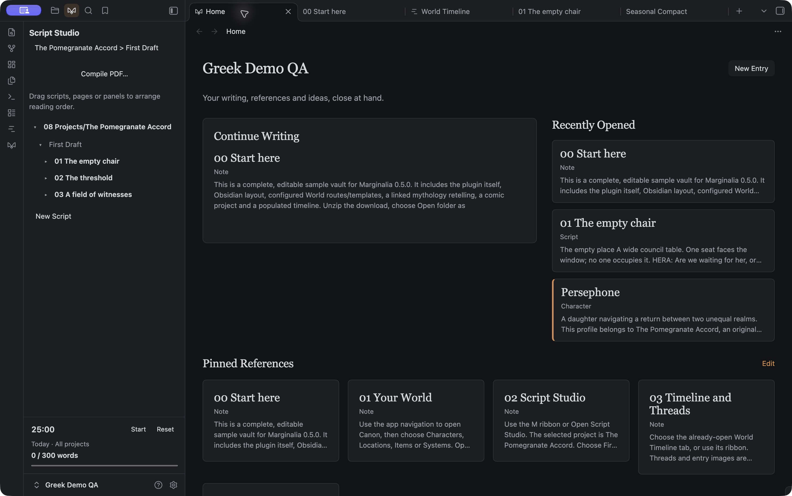
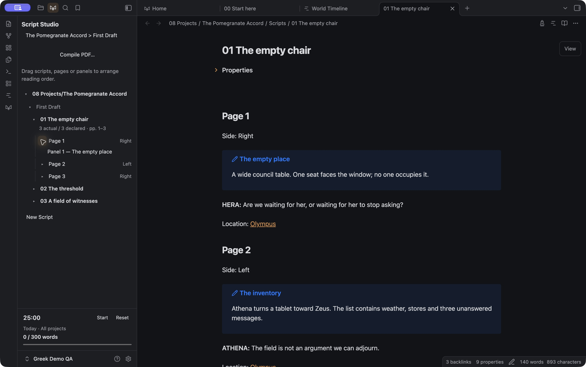
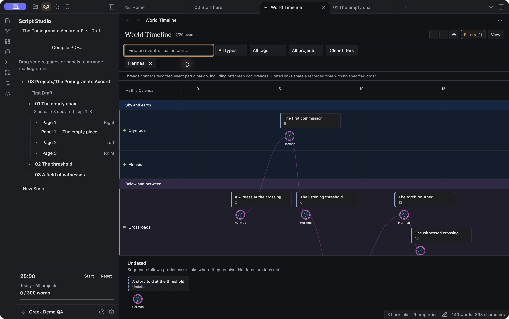
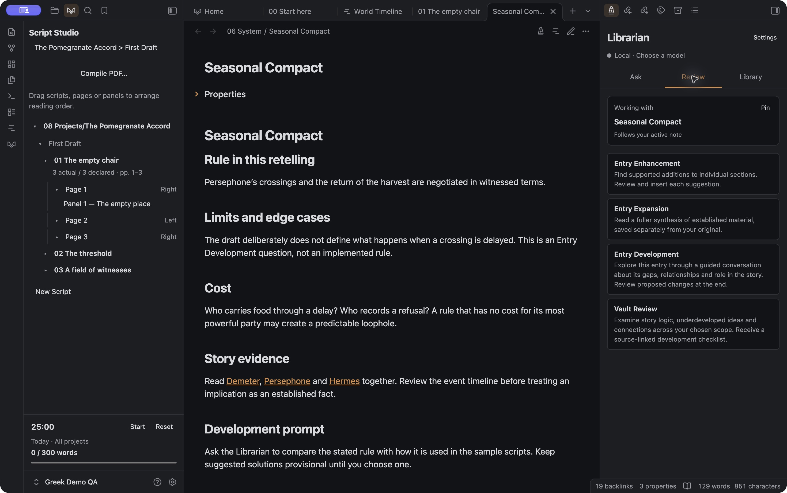

Build your world.
Follow its threads.
Build your world, write comics and graphic novels, and follow your characters through time. Marginalia brings your creative work together inside your vault.

Inside Marginalia

Greek Demo Home puts Continue Writing beside three recent notes, with walkthroughs pinned below. This is the same world included in the download.
A world beyond
a folder of notes.
Keep the things you know separate from the ideas you’re still exploring. Canon, Brainstorms and Projects give each part of your work its own place.
Make it fit your world
Choose World or Storyboard, configure entry types and templates, and create entries from your app pages.
Keep the source close
App pages open the original vault notes. Your words stay in ordinary Markdown files.
From a panel
to the whole story.
Script Studio is currently built for comics and graphic novels. Write in Obsidian’s native editor, with scripts, pages and panels organized in an outline beside you.
Keep the writing moving
Slash shortcuts, character suggestions, focused writing, a session timer and daily word goals.
Read it as a project
Choose a project or grouping, read scripts in order, and compile a PDF on desktop.


Hermes selected in the downloadable Greek Demo.
See when.
Follow who.
Set events against your world’s calendar. Arrange locations in colored groups, filter by several Canon entries, and follow a participant’s thread across the timeline.
A calendar that belongs to you
Custom Calendar notes, date spans, parallel calendar displays and a separate home for undated events.
Trace the connections
Toggle Threads, use local entry images or initials, click to highlight, and double-click to open an entry’s history.
Look at a moment
Snapshots show recorded state and location with the sources behind them. Unknown stays unknown.
Timelines are an optional desktop feature for World vaults.

A second set of eyes.
Your final say.
The Librarian uses a local Ollama model to work with your entries and their surrounding context. Ask questions, develop an idea, or look for the gaps in your world.
Enhance and expand
Review section suggestions, or read a separate expansion with source references. Accept source edits individually.
Develop an entry
Work through an adaptive conversation about what’s missing. Save author conversations in Brainstorms, then review recommended changes.
Review the vault
Get a source-linked checklist of inconsistencies, underdeveloped ideas and possible next entries, including timeline context. AI reports stay in hidden storage and open from Library.
Desktop only. Ollama and an installed model are required. No cloud fallback or automatic model downloads.